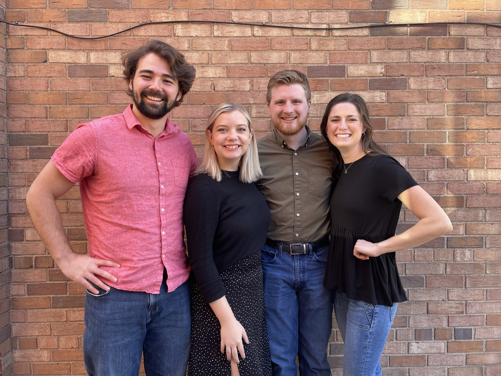

Reaching College Students for Christ in Toulouse, France
Hello! My name’s Troy, I’m a recent graduate of the University of
Minnesota, and I will be working with Cru this next year doing
college ministry in Toulouse, France! I will be interning there for
one year, working to reach students with the Gospel and build them up
in their faith. Below you’ll find a bit more about what I’m doing,
who I’m doing it with, and how you can come alongside us!
My vision for this year of ministry is that as many students as
possible would hear the Gospel through engaging them in spiritual
conversations and building up Christian students to be bold,
spiritual leaders on their campuses. In 2 Corinthians 5 the apostle
Paul calls us ambassadors for Christ. That is what I have been called
to do on the college campuses of Toulouse, and I am prayerfully
anticipating making and training new ambassadors for Jesus.

This is the team I’m going with to Toulouse - from left to right is
Gabe, Rachel, myself, and Monica. While being sent by the Great
Commission looks different for everyone, the four of us have been
convicted that giving the firstfruits of our post-college lives to
the Lord through full-time ministry with Cru in Europe is what that
looks like for us, and we cannot be more thrilled to see how God
works through this next year!
Cru is a caring community passionate about connecting people to Jesus
Christ. It’s a nonprofit organization similar to the Navigators or
InterVarsity, and has been a source of a lot of growth and
edification in my faith throughout college. I’ve been involved with
them for four years, and have led with them for two of those. Many of
my closest friends are students that I met through Cru, and I am very
excited to have the opportunity to work with them to provide
discipleship and community to students over in France who may not
know anyone who shares their faith!
I can already see God's hand at work in Toulouse and in this team that
is being sent. I would love to share with you more about the ministry
and how you can partner with me prayerfully, financially, and in
other ways! Feel free to give me a call or shoot me an email!
Email: troy.martin@cru.org
Phone: 218-461-7098
If you're interested in giving financially to my ministry, click the
button below to go to my giving page!